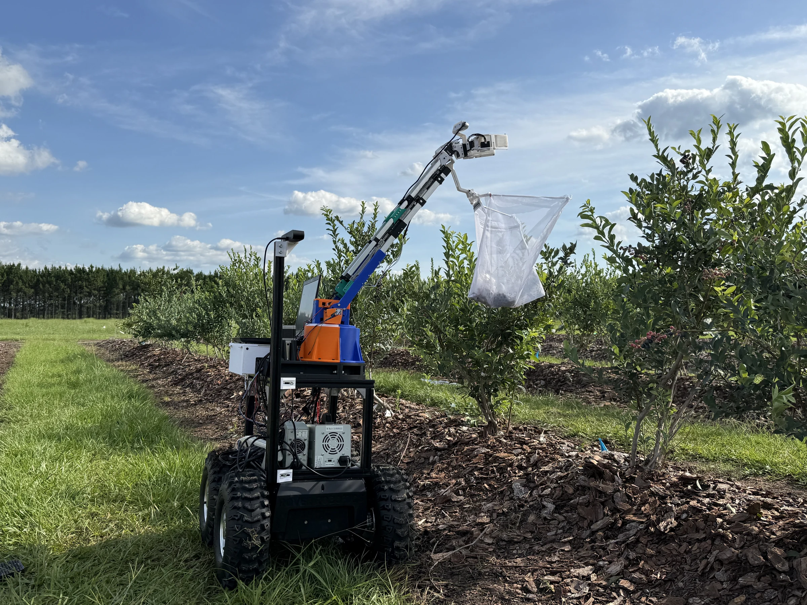

OpenArm berry harvesting
A simulation of an OpenArm robot using roller grippers to contact, detach, and collect berries.
This project began with an existing revolute–revolute–prismatic harvesting robot. I processed more than 100 exported STL components, rebuilt the articulated hierarchy, and corrected mesh origins and joint frames for simulation. The earlier workflow also connected the URDF model to ROS 2, ros2_control, and MoveIt 2 motion planning. The field photos below show the original mobile platform and fruit clusters with mixed ripeness and leaf occlusion.
I then integrated the original roller gripper with the existing OpenArm platform. The work carried the CAD assemblies into MJCF and URDF, mounted grippers on both wrists, and kept the RealSense D435 housing, bracket, and optical frames aligned with each end effector. My contribution is the robot integration and simulation, building on those existing hardware designs.
To model picking contact, I used segmented elastic belts around the rollers, flexible stems, and a load-and-fatigue attachment model from the supplied blueberry simulation. The belts can contact and transport fruit; attachment forces, bending, torsion, and accumulated damage determine when a berry releases. Force logging records attachment loads and a contact-based squeeze estimate.
The demonstrated sequence approaches and closes on the cluster, holds the arm command fixed while the rollers run, then opens and withdraws for collection. MuJoCo runs this video. Recorded simulation states allow the same physical trial to be viewed from several cameras. An optional Newton backend loads converted USD assets.
In this preset, 2 of 3 ripe berries are collected and all 5 unripe berries remain attached. These are results from one prescribed sequence. The eight-fruit target cluster carries the contact and detachment physics; the surrounding bush provides visual context. Ripeness affects the physical attachment parameters, rather than triggering a commanded release.
The current camera assembly is part of the model, but camera-based fruit recognition and a picking policy are not yet implemented. Future control work will choose gripping force, roller direction, and speed from the changing contact state. The earlier RRP model remains available in the same interactive twin.
Gallery
